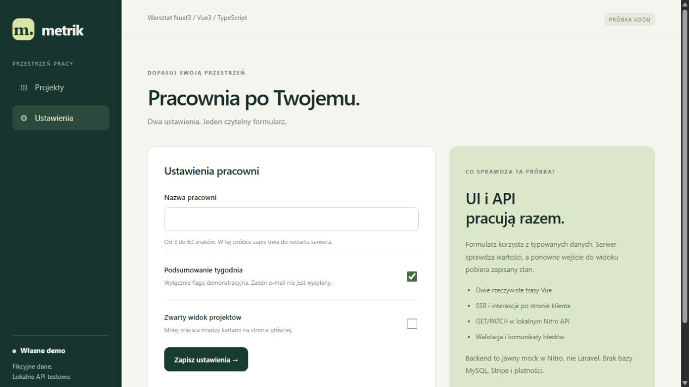

Solid Digital / autorska próbka QA / Metrik 1.0.0
Konkretny problem.
Powtarzalne kroki.
Sprawdzalne dowody.
Przykładowe zgłoszenie przygotowane na rzeczywistej własnej aplikacji Nuxt. Obserwacje oddzielam od proponowanego kryterium odbioru i od testów, których jeszcze nie wykonano.
QA-001 / walidacja nazwy
Nazwa pracowni złożona wyłącznie z niewidocznych znaków zostaje zapisana
Środowisko: Nuxt 3.21.11, Vue 3.5.44, Node v24.19.0, Windows. Własny lokalny build; Nitro z jawnym mockiem w pamięci.

Kroki reprodukcji
- Wyślij PATCH /api/workspace z name równym trzem znakom U+200B; oba pola logiczne zachowaj jako boolean.
- Odczytaj odpowiedź PATCH.
- Wyślij GET /api/demo i sprawdź zapisaną nazwę.
- Po reprodukcji odtwórz pierwotne ustawienia.
PATCH /api/workspace
Content-Type: application/json
{
"name": "\u200b\u200b\u200b",
"weeklyDigest": true,
"compactView": false
}Wynik rzeczywisty: HTTP 200; odpowiedź i późniejszy GET zawierają dokładnie trzy U+200B. Potwierdzono 3/3 razy. Są to znaki niewidoczne, więc nazwa nie daje czytelnej treści. Przeglądarka potwierdziła zapis, odświeżenie oraz wartość pola o kodach [8203, 8203, 8203]; zrzut pokazuje wizualnie puste pole.
Proponowane oczekiwanie: Nazwa złożona wyłącznie z niewidocznych znaków powinna zostać odrzucona z HTTP 400, bez zmiany poprawnej nazwy. To proponowane kryterium QA do zatwierdzenia przez osobę odpowiedzialną za produkt; istniejący tekst interfejsu podaje 3–60 znaków, nie definiując widoczności.
Wpływ: Możliwy zapis nazwy bez czytelnej treści. Nie stwierdzono utraty projektów, eskalacji uprawnień ani podatności bezpieczeństwa.
Analiza przyczyny: Warunek name.trim().length sprawdza długość, ale trim nie usuwa U+200B. Hipoteza przyczyny potwierdzona zachowaniem HTTP i odczytem handlera.
Stan całej aplikacji po zakończeniu testów porównano z migawką początkową - zgodność. Niezależna reprodukcja w przeglądarce potwierdziła wizualnie puste pole oraz kody [8203, 8203, 8203] po odświeżeniu. Wyniki UI są zapisane oddzielnie od HTTP.
Pobierz zgłoszenie TXTŻądania, odpowiedzi i dowodyRegresja i przypadki graniczne
PASS oznacza wykonany test z wynikiem zgodnym z założeniem. FINDING oznacza rzeczywistą obserwację do omówienia, z proponowanym kryterium odbioru.
| ID | Przypadek | Oczekiwanie | Wynik | Status |
|---|---|---|---|---|
| API-01 | Pobranie trzech projektów i ustawień | 200 | 200 | PASS |
| SSR-1 | Render głównego widoku | 200 | 200 | PASS |
| SSR-2 | Render ustawień | 200 | 200 | PASS |
| API-04 | Nazwa o minimalnej długości | 200 | 200 | PASS |
| API-05 | Nazwa poniżej minimum | 400 | 400 | PASS |
| API-06 | Nazwa na górnej granicy | 200 | 200 | PASS |
| API-07 | Nazwa ponad górną granicą | 400 | 400 | PASS |
| API-08 | Same zwykłe spacje | 400 | 400 | PASS |
| API-09 | Wartość tekstowa zamiast boolean | 400 | 400 | PASS |
| API-10 | Nieistniejący projekt | 404 | 404 | PASS |
| API-11 | Nieprawidłowy status | 400 | 400 | PASS |
| API-12 | Poprawny zapis statusu i odczyt | 200 | 200 | PASS |
| API-13 | Nazwa wyłącznie z trzech niewidocznych U+200B | Proponowane kryterium QA: 400 oraz brak zmiany nazwy | 200; zapisano dokładnie trzy U+200B; 3/3 powtórzeń | FINDING |
| API-14 | Pełne odtworzenie stanu po testach | Stan identyczny z początkowym | Zgodność całego JSON | PASS |
Jak rozszerzyć testy manualne
Po zatwierdzeniu kryterium sprawdziłbym w interfejsie wklejenie wartości, zapis, komunikat walidacji, odczyt po odświeżeniu i zachowanie poprawnej nazwy po odrzuceniu błędnej. Do regresji dołączyłbym granice 3 i 60 znaków oraz uzgodnione przykłady nazw wielojęzycznych.
Rzeczywiste wcześniejsze sprawdzenie formularza Nuxt przez przeglądarkę pochodzi z poprzedniej sesji; obejmowało zmianę i odczyt nazwy oraz ustawień. To osobny historyczny dowód. Dzisiejszy przypadek niewidocznych znaków ma dodatkowy, odrębny dowód UI.
Drugi własny projekt warsztatowy dotyczy WordPress/WooCommerce: lokalny checkout, zapis zamówienia, odczyt CMS i odtworzenie kopii. Ręczny przelew BACS był nieopłaconą próbą, bez rzeczywistej płatności.
Pobierz komplet zgłoszenia i dowodów Przypadki JSON · Zgłoszenie JSON